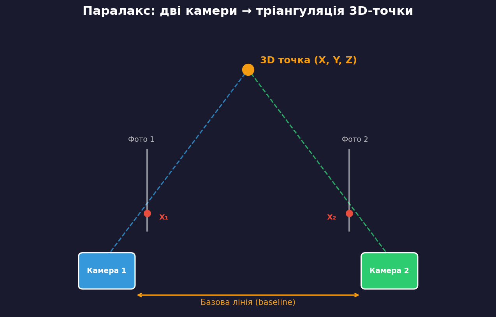
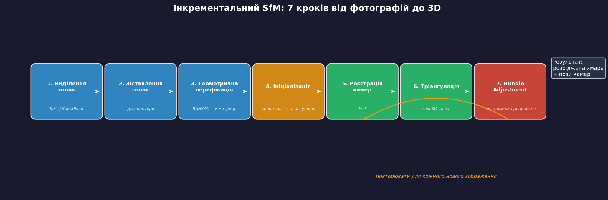
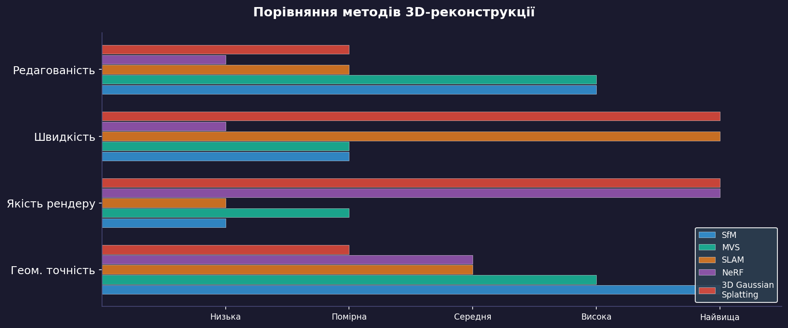
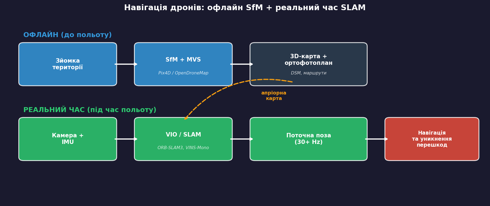
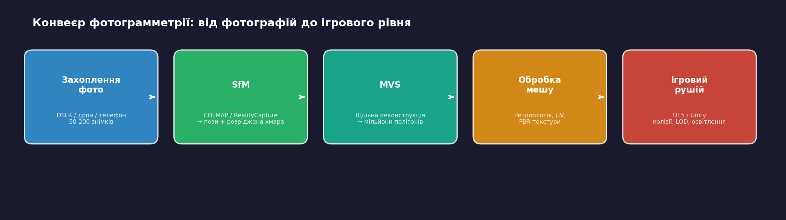
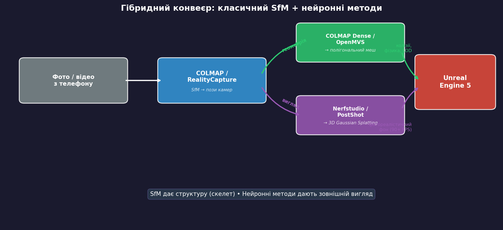
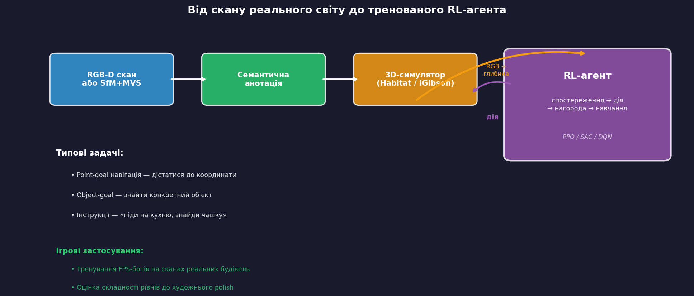

3D-реконструкція сцен
Structure from Motion та застосування в іграх
Штучний інтелект в ігрових застосунках
Національний університет «Львівська Політехніка»
Від 2D до 3D: навіщо?
CNN розуміють зображення — але ігри та роботи живуть у 3D-просторі
Датчики глибини
LiDAR, стерео, ToF
Точно, але дорого
Моноколярна оцінка
Нейромережа за 1 фото
Швидко, але неточно
SfM
Геометрія з набору фото
Достатньо смартфона
Паралакс: як ми бачимо глибину

Два погляди на одну точку → тріангуляція → 3D-координати
Structure from Motion — що це?
Одночасне відновлення структури сцени (3D-координати точок)
та руху камери (положення + орієнтація)
з набору неструктурованих фотографій
Вхід: набір звичайних фото (будь-який порядок)
Вихід: розріджена хмара 3D-точок + калібровані пози камер
Інкрементальний SfM: 7 кроків

Кроки 1–3: від пікселів до геометрії
1. Виділення ознак
SIFT / SuperPoint знаходять точки, інваріантні до масштабу, повороту, освітлення.
Кожна точка → числовий дескриптор
2. Зіставлення
Порівняння дескрипторів між парами фото.
Результат: пари відповідних точок (matches)
3. Геометрична верифікація
RANSAC оцінює фундаментальну матрицю —
геометричне відношення між двома видами.
Помилкові пари (outliers) відкидаються
Результат: очищений граф сцени —
які зображення пов'язані геометрично
Кроки 4–6: нарощування моделі
4. Ініціалізація: обрати пару фото з великою базою →
тріангулювати початкові 3D-точки
5. Реєстрація нових камер: для кожного нового фото знайти відповідності
з уже відомими 3D-точками → розв'язати задачу PnP (Perspective-n-Point) → отримати позу камери
6. Тріангуляція: нова камера створює нові пари точок →
обчислити нові 3D-координати → хмара зростає
Кроки 5–7 повторюються для кожного нового зображення
Крок 7: Bundle Adjustment
Нелінійна оптимізація, що уточнює все одразу —
всі пози камер і всі 3D-точки:
$$\min_{\mathbf{X}, \mathbf{P}} \sum_{i} \sum_{j} \| \mathbf{x}_{ij} - \pi(\mathbf{P}_j, \mathbf{X}_i) \|^2$$
$\mathbf{X}_i$ — 3D-координати $i$-тої точки
$\mathbf{P}_j$ — параметри $j$-тої камери
$\pi$ — функція проекції 3D → 2D
$\mathbf{x}_{ij}$ — спостережувані 2D-координати
Мінімізуємо помилку репроекції — різницю між тим, де точка є на фото,
і де б вона мала бути за нашою 3D-моделлю
SfM у контексті: споріднені методи

SfM — фундамент. NeRF і 3DGS використовують пози камер від COLMAP як вхід
Порівняння: SfM, MVS, SLAM, NeRF, 3DGS
|
SfM |
MVS |
SLAM |
NeRF |
3DGS |
| Вхід |
Фото |
SfM-результат |
Відео (live) |
Фото + SfM-пози |
Фото + SfM-пози |
| Вихід |
Хмара + пози |
Щільний меш |
Поза + карта |
Нові ракурси |
Нові ракурси |
| Швидкість |
Офлайн |
Офлайн |
30+ Hz |
Години |
30–60 хв |
| Рендер |
— |
Низька якість |
— |
Фотореалістичний |
90+ FPS |
Інструменти SfM
COLMAP
Open source, C++
Золотий стандарт точності
CLI + GUI
RealityCapture (Epic Games)
Найшвидший на ринку
Безкоштовний < $1M доходу
Інтеграція з UE5
Meshroom / AliceVision
Open source, GUI на нодах
Зручний для навчання
Більшість робіт з NeRF і 3DGS
використовують COLMAP
для обчислення позицій камер
SfM у навігації дронів

Дрони: офлайн vs реальний час
До польоту (SfM)
- Зйомка з перекриттям
- SfM+MVS на сервері
- Ортофотоплан + DSM
- Pix4D, OpenDroneMap
Під час польоту (SLAM)
- VIO: камера + IMU, 30+ Hz
- ORB-SLAM3, VINS-Mono
- SfM-карта як апріорна інформація
Проблема масштабу: монокулярний SfM не знає реальних розмірів.
1 м чи 10 м? Для дрона це критично.
Розв'язання: GPS-мітки, IMU, відомі об'єкти
Від реального світу до ігрового рівня

Фотограмметрія в індустрії
| Студія / продукт | Як використовують |
|---|
| EA DICE (Battlefield) | Фотографування реальних локацій для ігрових карт |
| Infinity Ward (CoD: MW) | Сканування середовищ для фотореалістичних рівнів |
| DICE (Star Wars Battlefront) | Скани реальних декорацій фільму для ігрових сцен |
| Quixel Megascans (Epic) | 18 000+ сканованих ассетів, безкоштовно для UE5 |
Фотограмметрія економить місяці ручного 3D-моделювання
Нейронні методи: NeRF та 3D Gaussian Splatting
NeRF
Нейромережа вивчає функцію:
$f(\mathbf{x}, \mathbf{d}) \to (c, \sigma)$
координата + напрямок → колір + щільність
Тренування: години
Рендер: секунди/кадр
3D Gaussian Splatting
Набір 3D-еліпсоїдів з кольором
Диференційована растеризація
Тренування: 30–60 хв
Рендер: 90+ FPS
Обидва методи використовують COLMAP-пози як вхід.
SfM дає структуру — нейронні методи дають зовнішній вигляд
3DGS для ігор: поточні обмеження
Чого немає:
- Полігональний меш → немає колізій
- Фізика — об'єкти не взаємодіють
- LOD — складно оптимізувати
- Редагування обмежене
Де вже працює:
- Кінематографічні фони
- VR-середовища
- Швидкий прототипінг рівнів
- Превізуалізація
glTF: розширення KHR_gaussian_splatting (серпень 2025)
UE5: плагін XVERSE XScene (Apache 2.0)
Нативна підтримка в рушіях — найближчим часом
Гібридний конвеєр

Реконструйовані середовища для RL
Тренування RL-агента (наприклад, FPS-бота) потребує тисяч годин взаємодії з 3D-середовищем
Проблема:
Вручну моделювати тренувальні рівні — дорого та повільно
Рішення:
Відсканувати реальну будівлю → отримати готове середовище за годину
Від скану до тренованого агента

Платформи для embodied AI
| Платформа | Що це | Датасет |
|---|
| Meta Habitat |
Швидкий 3D-симулятор для навігації |
HM3D: 1000 сканів будівель |
| Replica (Meta) |
Високоякісні скани з семантикою |
18 приміщень, HDR + розмітка |
| iGibson (Stanford) |
Інтерактивні сцени з фізикою |
Готовий RL-код (SAC) |
| AirSim / UnrealCV |
UE5 як бекенд для RL |
Будь-який UE5-рівень |
Чому це важливо для геймдеву
Тренування ботів на реальній геометрії
Скан будівлі → прототип рівня → бот тренується до художнього polish
Оцінка складності рівнів
RL-агент проходить рівень 1000 разів → метрики для левел-дизайнерів:
час проходження, «мертві зони», вибрані шляхи
SLAM3R (CVPR 2025 Highlight)
Реконструкція 3D з відео через feed-forward нейромережу —
без SfM чи bundle adjustment. Потенціал: генерація середовищ «на льоту»
Підсумок
| Концепція | Ключова ідея |
|---|
| SfM | Фотографії → 3D-хмара + пози камер (7-крокова оптимізація) |
| SfM = фундамент | MVS, NeRF, 3DGS — усі потребують SfM-позицій як входу |
| Фотограмметрія | Індустріальний стандарт: реальний світ → ігровий рівень |
| Дрони | Офлайн SfM (карта) + реальний час SLAM (політ) |
| RL середовища | Скани будівель → тренування ігрових ботів |
| 3DGS / NeRF | Фотореалістичний вигляд, але без мешу для фізики |
Наступна лекція: Обробка послідовностей — RNN, LSTM, механізм уваги